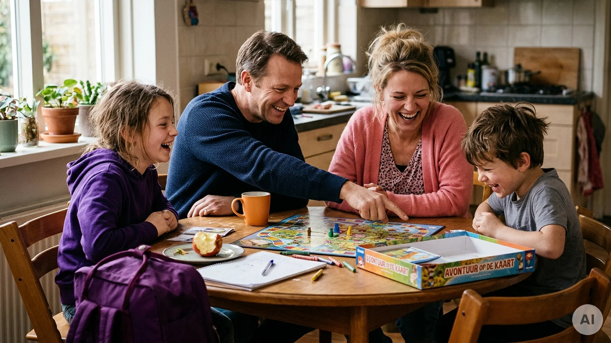
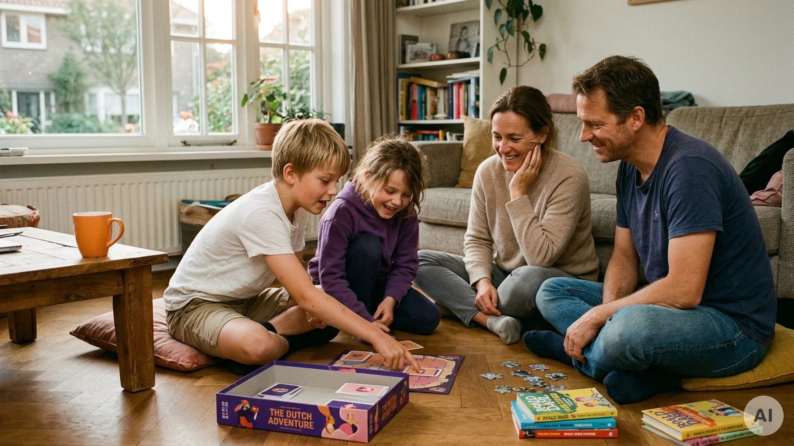

Over Monimentor • Gezinsapp voor 7–12 jaar
Over Monimentor
De iOS-gezinsapp voor iPad en iPhone die gezonde schermgewoontes opbouwt — ruim vóór de eerste smartphone. Samen als gezin, met Moni als gids en de zichtbare knikkerpot.
Het Verhaal van Twee Vaders
Gebouwd door vaders — voor onze eigen kinderen, en die van jou.
Wij zijn Bas en Maarten — twee vaders, softwaremakers en oude studievrienden uit Delft. Net als in ieder gezin zagen we het thuis gebeuren: de spanning als de iPad weg moet, de magnetische aantrekkingskracht van schermen, en de zoektocht naar balans. Maar kinderen doen vooral wat jíj doet, niet alleen wat je zegt. Daarom bouwden we géén politie-app. We bouwden een gezinsapp: met Moni als 3D-gids, een zichtbare knikkerpot die voor iedereen hetzelfde eruitziet, en de overtuiging dat gezonde gewoontes samen het leukst zijn. Het wordt geen muur tussen ouders en kinderen, maar een uitdaging waar de hele familie aan meedoet.
De Gezinsaanpak
Een pot met 100 knikkers. Voor iedereen precies hetzelfde.
In plaats van ingewikkelde discussies over minuten — "oneerlijk, hij mag langer!" — heeft iedereen in huis precies dezelfde pot met 100 knikkers. Maar ieders pot heeft zijn eigen verantwoorde grens, net als een golf-handicap. Zo zie je in één overzicht hoe het hele gezin ervoor staat.

Jonge kind (7–8 jr.)
100 knikkers100 knikkers = een half uurtje
Oudere broer/zus (9–11 jr.)
100 knikkers100 knikkers = 1 uur
Papa of mama
100 knikkers100 knikkers = 3 uur
Staat de pot op 50 knikkers? Dan zit iedereen precies op de helft van zijn eigen limiet.
Eerlijke gezinschallenge
Omdat elke knikker relatief meetelt, kan een 8-jarige het aan tafel eerlijk opnemen tegen papa of mama.
Zachte grens bij 100 knikkers
Zit je pot vol? Dan wordt Moni moe. Nog even afmaken mag (geen boos zwart scherm), maar kost donkere knikkers van morgen.
Geen eigen telefoon nodig
Werkt op de familie-iPad, jouw telefoon, voor de Switch of tv — én aan de keukentafel met ons bordspel Cloud Surfers.
Waar we voor staan
Eerlijk, veilig en onderbouwd.
Onderbouwd door wetenschappelijk onderzoek
Ontwikkeld op basis van onderzoek naar zelfregulatie en gezinsdynamiek, getoetst met pedagogen en mediacoaches, en aangesloten bij Netwerk Mediawijsheid.
Geen spionage, 100% gezinsprivacy
Géén screenshots van chats of foto's. Geen commerciële profielen en nul dataverkoop. Alle inzichten blijven versleuteld binnen jullie eigen gezin.
Eerlijk & onafhankelijk model
3 maanden gratis proberen en daarna €3,99/mnd (€47,88/jaar) voor het hele gezin — volledig vrij van adverteerders, aangevuld met ons bordspel Cloud Surfers.
Sluit je aan
Doe mee op jouw manier
Of je nu vanavond al rust wilt aan je eigen keukentafel, of als professional wilt samenwerken aan een gezonde digitale generatie.

Voor ouders & gezinnen
Direct starten met rust en gezonde schermgewoontes in jullie gezin? Download de Monimentor app in de App Store en begin vanavond.